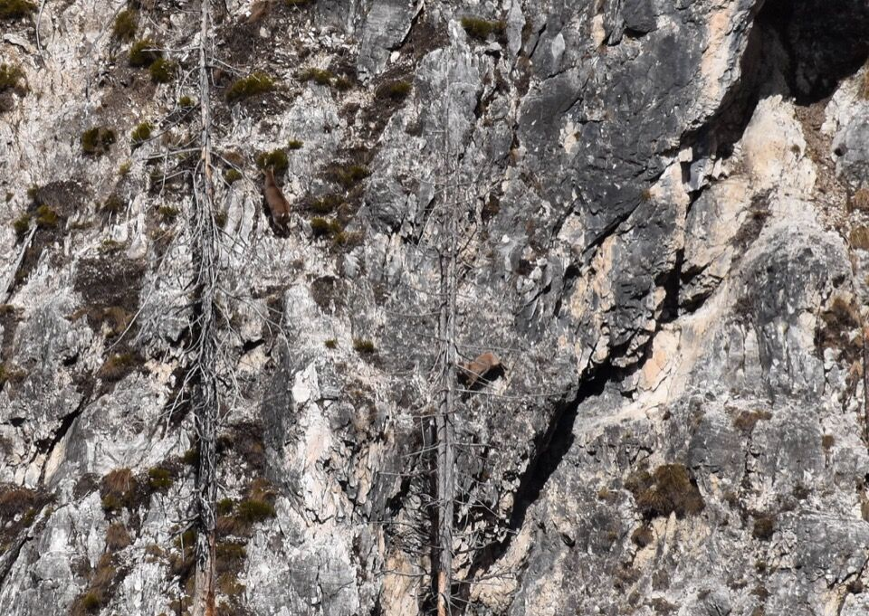

Dopo diversi giri fatti in zona, su e giù per il Rop, per Sbrici e per altre parti, avevo la curiosità di salire in cima a quell'anonimo cocuzzolo che è il Cuel dai Sbrici, ben visibile da Patoc, sulla cui sommità le vecchie mappe riportavano uno stavolo; a dir la verità avevo anche altre velleità in mente, di cui sono venuto a conoscenza nel tempo.
Un'alba strepitosa ci dà il benvenuto a Patoc in vista delle più di dieci ore di cammino (come ogni giro in zona che si rispetti).
In foto il Pic di Babe (letteralmente "picco del monte") e il Ciùc dal Corvàt, a cui penso da un po'.
Desideravo da tempo percorrere il sentiero basso che da Patoc scende subito nel rio Sbrici mediante un cengione spiovente per poi risalire alla Via Alta nel versante opposto nei pressi del rio della Scala; ero un po' preoccupato per le condizioni in cui potesse trovarsi questo sentiero, per via del disastroso incendio del 2013 e la mancanza di informazioni, ma la consultazione delle foto satellitari mi avevano rassicurato sulla prima parte.
Non ho chiuso occhio talmente ero curioso di vedere questo cengione! Come sempre accade, cose desiderate tanto e poi realizzate perdono di colpo il loro fascino (e questa è il dramma del mio andare in montagna: non si è mai contenti).
Uno stambecco è poco incline a farci passare... ma in qualche modo passiamo e mettiamo piede sul cengione. Vari tratti esposti rendono la via più delicata rispetto alla mulattiera della Via Alta.
Diamo un occhio alle complicate pale che percorreremo: il troi passa in basso a sx, sale verso dx, incontra quello che sale da Chiout Cali, e cambia di colpo direzione valicando il costone in centro foto.
La bellissima parete gialla del Cjastelàt.
Si monta sull'altra sponda, su bella cengia con passaggi esposti.

Occhio alle temperature, ché se si trovano i colatoi ghiacciati diventa arduo passare.
Come dicevo, il sentiero oltrepassa il rio della Scala, si alza sul costone e ridiscende sul rio più in alto. Qui c'è una cengetta molto esposta, a cui manca un pezzo di cavo d'acciaio: abbiamo rimediato sacrificando uno dei miei cordini (non so quanto durerà, verrà probabilmente tranciato dagli stambecchi).

Comunque fin qui il sentiero non è male, ancora ben marcato con tanto di tornanti, e gli schianti non disturbano granché. Ci sono pure vecchi segnavia CAI 641 (del sentiero che sale da Chiout Cali, che non sapevo fosse CAI un tempo!).
Si inizia a fare sul serio.
Ecco il cengione che abbiamo percorso; Patoc è lì dietro.
Da notare le bizzarre macchie lasciate dal disastroso incendio del 2013 che ha distrutto questo settore di montagne.
Più in alto la traccia sparisce e bisogna accendere il cervello, seguendo i rami piegati dei polloni.
Si sale per la pala, che non è eccessivamente ripida, ma gli schianti obbligano a passaggi scomodi che col terreno sfaldato diventano delicati. La piccozza è sempre utile in questi posti.
Eccoci sotto il Cuel dai Sbrici: mica vorrai salire di qua?
Sulla Tabacco, come sulle IGM e addirittura sulla cartina di Dougan e Marussi, il sentiero salirebbe per qui. La cosa mi lascia davvero perplesso: ora è un incubo, tutto che si sfalda, schianti, frane, ma anche prima era comunque il versante più ripido (guarda la CTR), come è possibile che fosse preferibile salire da qui se ci sono almeno tre modi più comodi e meno ripidi a pochi minuti di distanza sulla Via Alta?
Dalle foto fatte dal Sart e grazie alla consultazione delle mappe CTR (la Tabacco inganna, mostra molte più rocce di quante ce ne siano davvero) ho escogitato i tre modi di cui parlavo prima per salire in cima. Scartiamo il primo costone perché bruciato e con schianti, e passiamo al successivo, che avevo visto essere nel bosco vivo (un lusso da queste parti!).
Lo storico quadrivio P = Patoc - S = Sbrici - VA = Via Alta - CC = Chiout Cali, che non durerà ancora tanti anni.
Un lavinâl si è aperto lungo la Via Alta ma si combina.
Ecco il primo costone, che valutiamo ma rifiutiamo, anin devant.
Questo ci piace già di più.
Avevo solo un dubbio su un eventuale saltino di pochi metri, ma troviamo un bel traccione che lo aggira.
Dal Cuel dai Sbrici si gode forse della più bella vista della forcje dal Fossâl, altissima e marmorea, fra il Mucul e il Cimòn.
Tutt'ora inaccessa da nord (lì dietro c'è un abisso di mille metri sullo Sfonderât), mi viene il dubbio che ci sia mai salito qualcuno pure da sud! Dougan scrive che si sale «per ripidissimi prati» alla forca ma questo è falso: sotto la forca c'è una parete verticale di 50m (e arrivare lì sotto forse è ancora peggio).
Comunque, per uno che ha salito la nord del Ciùc da Valisète, non credo fosse un problema salire al Fossâl... come mi ha suggerito poi Emanuele A., è molto probabile che qualche alpinista degli anni '50/'60 ci sia salito attratto dalla straordinaria lama di roccia che si protende verso il Cimòn.
Un motivo per salire fin qua era di dare un occhio ai dimenticati ruderi sulla cima, riportati sulle vecchie cartine ma non sulle Tabacco attuali. Curiosamente di essi non ne parla nessuno, e la questione mi incuriosisce assai (se si trovasse qualche vecchio che ne sa qualcosa!).
Sotto l'occhio vigile del Fossâl e del Cimòn, questo è proprio un luogo che merita di essere visitato.
Il bel piramidone del Ciùc da Valisète ci osserva dall'alto.
Ecco svelati i miei piani originali: salire per l'antico percorso del «coston dei Sbrici» e raggiungere l'ex stavolo per una cengia spiovente che avevo già adocchiato scendendo dallo Jovét Blanc.
Già dalle foto scattate dal Sart mi ero accorto della spaventosa quantità di schianti presenti, ma solo lì ho aperto gli occhi: pendio molto ripido, esposto (per via dei tronchi che obbligano a passaggi alternativi), tronchi pronti a cadere da un momento all'altro (e un tronco così ti spacca un femore), terreno sfaldato, un salto da superare, ritirata che sarebbe drammatica... insomma per canto mio il coston dai Sbrici, ahimè, non è più percorribile. Non dico che non si possa fare: dico che per me, alle condizioni attuali, la cosa lascia il tempo che trova.
La snella punta dello Jovét vista da est; sono quasi tentato di spifferare una cosa...
Bellissimo allineamento fra la Puartate e il ripiano dell'ex stâli dal Sbrici.
Uno sguardo verso Patoc e la prima parte del percorso; si vedono pure i tornanti della Via Alta.
Sentiamo rumore di sassi che cadono...
...e sono stambecchi su sentieri tutti loro, a noi preclusi.
Questo è davvero incredibile... non smetteranno mai di sorprendermi.
Mi viene da pensare che per loro la Semide debba essere una sorta di autostrada da fare a occhi chiusi in confronto...
Bando alle ciance, avendo mancato il giro programmato, ed essendo ancora presto, decidiamo di goderci la Via Alta, in direzione est, almeno per un pezzo.
Come me, anche Kelen è affascinato dal Sart, in particolare dai costoni che salgono dal fondovalle, dove in tempi ormai remoti, gli abitanti della val Raccolana costruirono alcuni stavoli per sfruttare ogni risorsa offerta dalla montagna.
La giornata è davvero magnifica.
Ancora non ho capito se sia questo lo stavolo del Palait.
Entriamo nel vallone del rio Malimbèrg, che finora avvevo solo visto dall'alto (ovvero dal mio punto da pausa pranzo preferito, cioè poco sotto la q1695 del coston dai Sbrici, dove c'è un saltone mostruoso sul sottostante rio).
In fondo Saletto, con una bella cengia di animali, poco sotto la traccia nera che scende in sx del rio Malimbèrg direttamente a Chiout Cali (quest'ultima fortunamente ben marcata, almeno nella parte alta).
Che non si pensi che stiamo solo a cianciare...
Il rio Malimbèrg. Si vede come andare a prendere la cengia che vi mostravo prima.
Bellissimo tratto in cengia, molto esposto ma sicuro, in dx orografica del rio Malimbèrg.
Ecco il Cuel dai Sbrici dove eravamo poco prima.
Il tratto forse più interessante, anche se parzialmente artificiale, del sentiero CAI che sale al vallone Blasic. Che ricordi!
Morte e desolazione lungo l'alta via di Raccolana.
Eccoci sotto al Cjavalot: anche qua la faccenda è davvero interessante, ma mi sto dilungando troppo. Comunque, per info ai pochi interessati: ho notato che la parte dove si sviluppa l'ardito sentiero che risale lo sperone, non è così disastrato dall'incendio (a differenza della parte visibile dal coston dai Sbrici - una visione atroce).
In sx orografica del rio Pliz (pronuncia Plisç, mi dice Andrea di Saletto) l'Alta Via si sviluppa lungo una cengia davvero aerea dove è meglio non guardare troppo in basso. Un piccolo franamento alla fine richiede attenzione supplementare.
Il costone fra i rii Malimbèrg e Plisç; anche qui miracolosamente si vedono ancora i sentieri tracciati in nero sulla Tabacco (peccato però che sui pendii spartiacque la quantità di tronchi sia spaventosa).
Scendiamo per il 641 che, per me, è in buone condizioni, giacché pulito dagli schianti e segnato con bolli blu (torrentisti che vanno al rio Plisç?). L'ambiente attorno è comunque impressionante.
Saletto.

Come dicevo, la situazione peggiore è sui pendii rivolti a sud che sembrano fungere da raccoglitori di tronchi.
Ma che bello che è il Cjavalot!
Per non parlare della forcje dal Fossâl!
La stupenda pozza sul vuoto del rio Malimbèrg.
Troviamo anche un cucciolo di stambecco mezzo smembrato - che per pudore non pubblico.
Finalmente arriviamo a Chiout Cali dove scambiamo due parole con due anziani del luogo, i quali ci indicano per dove passava il sentiero del Palait.

Appunto dico passava...
Con grave disappunto delle gambe torniamo su a Patoc.
Eccoci alla fine: il Cuel dai Sbrici sotto l'imponente muraglia del Cimòn.